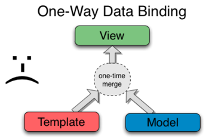
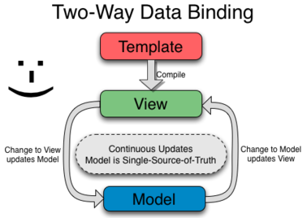

En introduksjon
Intro
Historikk
Startet av Google
"Angular" == >
Hvorfor
Dynamisk web
Knockout.js, EmberJS, AngularJS, BackboneJS
Model View Whatever
Scope
I praksis
Statisk HTML
<html>
<head>
<title>Eksempel</title>
</head>
<body>
</body>
</html>
Bootstrapping
<html data-ng-app>
<head>
<title>Eksempel</title>
<script src="/Scripts/angular.min.js"></script>
</head>
<body>
{{5+5}}
</body>
</html>
{{title}}
 {{title}}
{{title}}
<h2>{{title}}</h2>
<input ng-model="title">
<input type="number" ng-model="numb1">
+
<input type="number" ng-model="numb2">
= {{numb1+numb2}}
{{title}}
{{title}}
<table>
<thead>
<tr>
<td>Project Id</td>
<td>Project Name</td>
<tr>
</thead>
<tbody>
<tr data-ng-repeat="order in orders">
<td>{{order.ProjectId}}</td>
<td>{{order.ProjectName}}</td>
</tr>
</tbody>
</table>
Demo
{{title}}
Info
{{title}}
<table>
<thead>
<tr>
<td>Project Id</td>
<td>Project Name</td>
<tr>
</thead>
<tbody>
<tr data-ng-repeat="order in orders" | filter:"Time off in lieu" >
<td>{{order.ProjectId}}</td>
<td>{{order.ProjectName}}</td>
</tr>
</tbody>
</table>
Demo
i18n, l10n
Info
i18n, l10n
Syntaks
Demo
Routing
Info
Routing
var app = angular.module('NgESS', ['NgESSFilters','ngRoute']);
app.config(['$routeProvider',
function($routeProvider) {
$routeProvider.
when('/ng-repeat', {
templateUrl: 'partials/ngrepeat.html',
controller: 'orderCtrl'
}).
when('/filter', {
templateUrl: 'partials/filter.html',
controller: 'orderCtrl'
}).
otherwise({
redirectTo: '/'
});
}]);